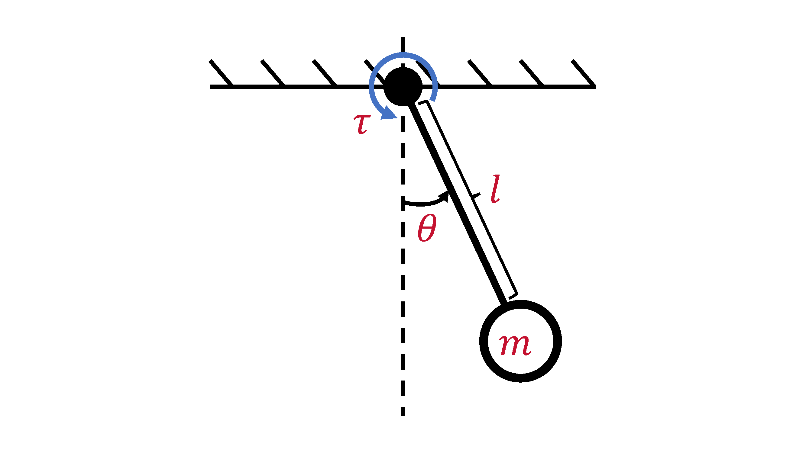
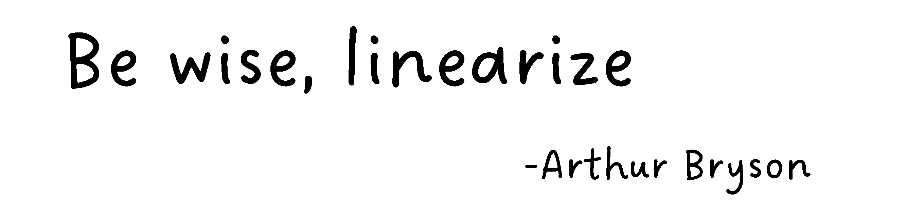
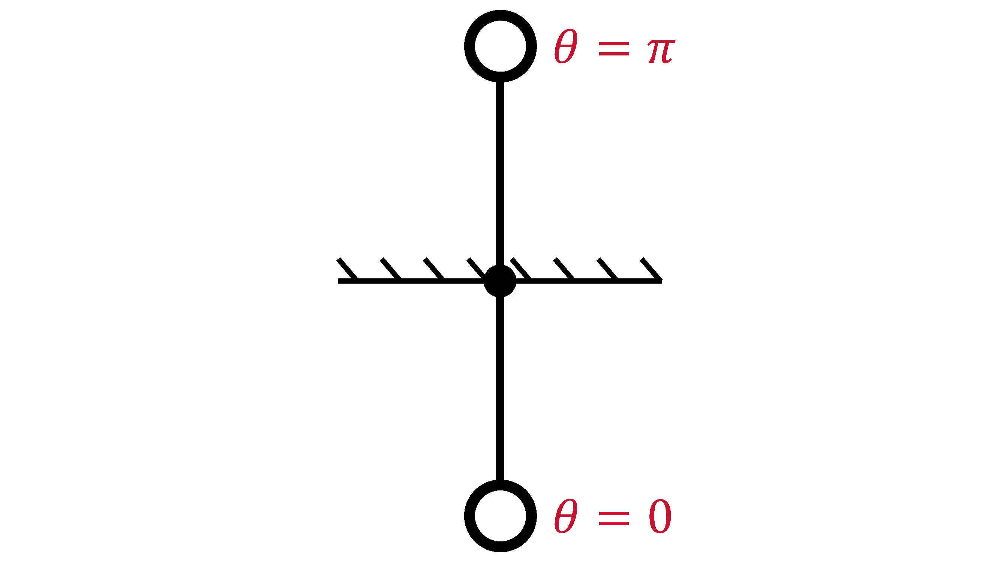
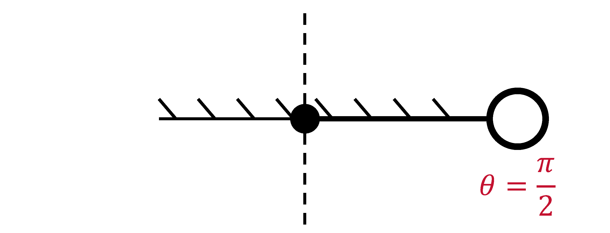
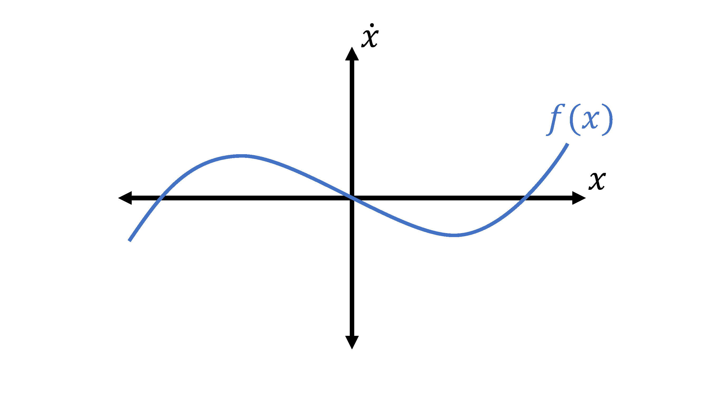
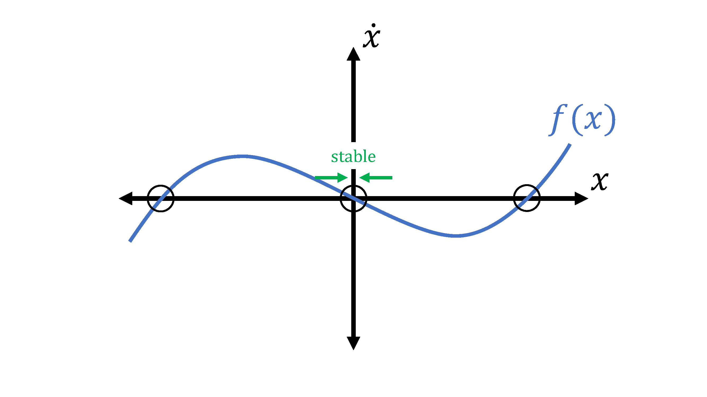
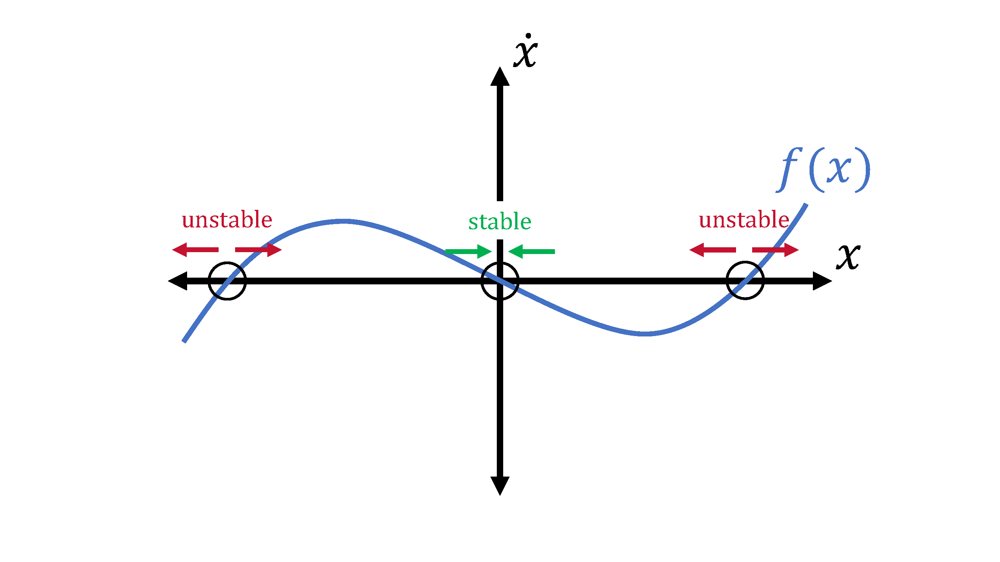

1. Continuous-Time Dynamics & Equilibria
Topics Covered
- Introduction
- Motivating Example (Pendulum)
- Continuous-Time Dynamics
- Equilibria
Introduction
To start things off, we're going to go through some background material. Specifically, we're first going to provide a crash course on dynamics, which defines the behavior of many robotics systems that we will later attempt to "control" to do what we want. Before we do "optimal control," we need to understand what we're going to control and what it means to control a robot.
Disclaimer: This course will have an emphasis on robotics applications, specifically mechanical systems, but many of the methods are applicable to other types of systems such as chemical processes, which is where optimal control actually originated from.
We'll begin with a high-level overview of continuous-time dynamics, equilibria, and stability to provide a background to those unfamiliar with topics like dynamics and differential equations. This will provide a basic foundation to describe how robotic systems move and interact with their environment. In later lectures, we will learn how to discretize them to make them useful for computers (e.g., our future controllers).
Motivating Example (Pendulum)
Let's start with a real-life example: a pendulum, the world's simplest nonlinear dynamical system (or robot),

where we have a point mass of mass \(m\) subject to gravity, \(g\), while being suspended by a massless rod of length \(l\) that can swing about a pivot point.
If we want to describe the motion of the pendulum, we need to:
- Define scalar variables that represent/parameterize the system,
- Describe how those variables evolve to explain the system's behavior.
In the case of the pendulum, we somehow want to parameterize its swinging motion. First, we need to way to characterize where the pendulum is during the swing; one way of doing so is keeping track of the pendulum's angle, \(\theta\), which gives us one variable. However, that's not enough - if we want to be able to know where the pendulum will be in the future (i.e., how it will evolve), we also need to know how fast its swinging. Therefore, let's also keep track of the pendulum's angular velocity, \(\dot{\theta}\). To be concise, we can stack our variables into a vector \(\in \mathbb{R}^{2}\) (i.e., in 2D space of real numbers):
Now, we can use those variables (along with physics) to describe how the pendulum swings in the form of a ODE (ordinary differential equation):
where \(\tau \in \mathbb{R}\) is the torque applied to the pendulum. Just like before with the variables, we can express this ODE in a vector form:
where \(u = \tau\). To provide names to everything, we call \(x\) the pendulum's state and \(f(x, u)\) the pendulum's dynamics model.
Now, let's say we want to make the pendulum "do something." Let's say we want to make it rotate counter-clockwise. Then we need to apply some sort of input to the system. In the pendulum's case, we can apply a torque (from an imaginary motor at the base) which we defined as \(u\). As hinted at earlier, we call \(u\) our control input.
Continuous-Time Dynamics
General Form
While the pendulum is a nice, specific, real-life example, we need to be able to express things more generally to extend the same idea to other systems. The most general/generic way to write continuous-time dynamics for a smooth sytem is in the form,
Just like we did for the pendulum, we call \(f\) the dynamics, \(x \in \mathbb{R}^{n}\) the state (assume a vector for now), and \(u \in \mathbb{R}^{m}\) the input. From a robotics perspective, smooth means that it doesn't involve things like rigid contact that cause discontinuous/switching behaviors. We'll study this in greater detail in later lectures.
Specifically for a mechanical system (most things in robotics), the state can be split into 2 pieces:
where \(q\) is called the configuration/pose and \(v\) is the velocity. In the case of the pendulum, the configuration would be the angle, and the velocity would be the angular velocity:
NOTE: \(q\) is not always a vector. For example, in the case of the pendulum, we kind of lied... \(\theta\) can only be between \(0\) and \(2\pi\). Therefore, we say the \(q \in \mathbb{S}^{1}\) (i.e., in a 1D circle). If \(\dot{\theta}\) can be any real number, then what does \(x\) look like? HINT: it's not \(\mathbb{R}^{2}\).
Control-Affine Systems
Often times, we see common structures across so many dynamical systems that we give them labels. One kind is called control-affine systems, which is in the form,
where \(f_{0}\) is called the drift term, and \(B(x)\) is known as the input Jacobian. This expression essentially just means that the dynamics is linear with respect to \(u\). It turns out most systems, including all mechanical systems, can be written in this form. In the case of the pendulum:
Manipulator Dynamics
If we get even more specific, we'll find another form that's very common in robotics. In fact, this specific form once again encompasses all mechanical systems. We call it the manipulator equation, which we write as
where \(M(q)\) is called the mass matrix, \(C(q, v)\) is the dynamic bias, \(B(q)\) is again the input Jacobian, and \(F\) represents all other external forces. As we noted before, \(q\) is not always a vector, which implies that in a lot of cases, \(\dot{q} \neq v\). Therefore, we must generally say that
We call this expression the velocity kinematics, and this will show up a lot in 3D rotations (e.g., quaternions, rotation matrices, and if you're sadistic... Euler angles), which we'll study in later lectures.
When applied to our pendulum example, the manipulator equation's terms are
Practically speaking, a lot of existing robotics toolboxes/packages will provide these terms for you so that we don't have to do heinous, complicated physics to get them - hurray!
Remember, we still need our dynamics model to describe \(\dot{x}\) (how our states evolve). Massaging the manipulator equation to do so gives us
One nice thing about this is that \(M(q)\) is always invertible if we make good choices for the coordinates of \(x\). In addition, inverting \(M(q)\) is the most expensive operation here, which limits the time-complexity of solving this equation to \(O(n^{3})\). This is good because we care about speed; our controller has to run in real-time when on an actual robot. Unfortunately, this can still be expensive for a big robot with a lot of links (e.g., humanoid), but there are smarter ways of dealing with this that can be \(O(n)\).
NOTE: Practically speaking, you should almost never solve for \(M(q)^{-1}\) directly. As alluded to earlier, there are applicable, smart solvers/methods for solving linear systems (\(Ax=b\)) that can achieve \(O(n)\).
Linear Systems
Linear systems are our most specific, but still widely-used form of modeling dynamical systems. In fact, it's hard to overstate just how important linear systems are in control theory; we can solve them exactly in closed-form, analyze their behaviors rigorously, and approximate many systems with linear models. In fact, they're so well-studied that there are whole classes/textbooks on them, but for our purposes, we'll provide a high-level overview here.
As hinted by the name, linear systems have the form:
If \(A(t)\) and \(B(t)\) are constant (i.e., \(A(t) = A\), \(B(t) = B\)), then the system is called time invariant. The system is time varying otherwise.
As previously mentioned, linear systems are super important in control, one of those reasons being that we often approximate nonlinear systems locally with linear ones using Taylor series:
It turns out this works surprisingly well in controls; so well that we can often design bread-and-butter controllers with the linearized model and still run it successfully in nonlinear settings (e.g., the real world). This is usually a good first step!

Equilibria
Definition
Switching gears a little bit, let's now talk about another super important topic in dynamics, which is equilibria. Intuitively, this is a point where a system will "remain at rest." Algebraically, the equilibria, \(x_{eq}\), are the roots of our dynamics, where
In the case of the pendulum, the equilibria are where our pendulum is pointing straight down and upright respectively; if we leave the pendulum at those spots, it shouldn't move. We can determine the points (i.e., the states) that correspond to the equilibria:

First Control Problem
Let's use this opportunity to solve our first control problem: what \(u\) do we need to apply to move the equilibria to \(\theta = \frac{\pi}{2}\)?

Using the expression of equilibria for our pendulum, we can solve for \(u\) accordingly:
Like this pendulum example, we generally get a root-finding problem in \(u\):
Stability of Equilibria
Not only do we care about where the equilibria are, but also how stable they are. This is absolutely another core concept in control, so we strongly suggest you pay attention. What we're generally asking with regard to stability is the following: "when will we stay stay 'near' an equilibrium point under perturbations?"
We'll demonstrate by example by looking at a made-up, stupid-looking 1D system (\(x \in \mathbb{R}\)) with no control inputs:

We can mark the equilibria by finding the roots, which are circled in black. Let's look at the middle one first; if we choose a point just to its right, the sign of \(\dot{x}\) is negative, which is going to push us back to the equilibrium. If we choose a point on the left, then the positive \(\dot{x}\) is also going to push us back towards the equilibrium. Because we'll wind up back at the equilibrium from any direction, we call the middle equilibrium point a stable equilibrium.

If we look at either the left or the right equilibrium, we can play the same game; if we choose a point close but to the right, the sign of \(\dot{x}\) is positive, which is going to push us away from the equilibrium. A point on the left will also push us away, so no matter what, we'll be moving away from the equilibrium. As you can guess, we call the left and right equilibrium points unstable equilibria.

From a more mathematical standpoint, we can see that the derivatives of \(f\) at the equilibria determine the stability:
In the case of the pendulum, we can intuitively see that the bottom and upright equilibria correspond to a stable and unstable one respectively. However, for this higher-dimensional system, how do we come up with a mathematically equivalent version? We know that the higher-dimensional equivalent to a scalar derivative is the Jacobian (\(\frac{\partial f}{\partial x}\)), but what's the equivalent to the Jacobian being positive or negative?
The answer lies in the eigenvalues! Let us linearize the dynamics at an equilibrium and perform an eigendecomposition of \(\frac{\partial f}{\partial x}\):
where \(v_{i} \in \mathbb{R}^{n}\) is the \(i\)th eigenvector of \(\frac{\partial f}{\partial x}\) and \(\lambda_{i} \in \mathbb{C}\) (i.e., a complex scalar) is the corresponding eigenvalue. By relabeling the linear mapping, \(T^{-1}x\), as a new vector, \(z\), we can now analyze the system in terms of \(z\):
then we can see that we essentially decoupled the higher-dimensional system into multiple 1D systems. Therefore we can evaluate the real parts of each eigenvalue of \(\frac{\partial f}{\partial x}\) in a similar manner as before with the scalar case:
NOTE: If any of the eigenvalues' real parts is positive, then the system is unstable. Also, remember to evaluate \(\frac{\partial f}{\partial x}\) at the equilibrium of interest!
Applying our stability analysis to the pendulum:
As expected, at \(\theta = \pi\), a positive real component of an eigenvalue \(\Big(\sqrt{\frac{g}{l}}\Big)\) exists, so the pendulum is unstable about the upright equilibrium. This matches our intuition.
At \(\theta = 0\), we see that the real components of the eigenvalues are equal to 0. This isn't in our notes - what's going on?
In the case of the pendulum, we can see that without damping, the pendulum will just keep swinging about the bottom equilibrium. We call this behavior marginally stable.
NOTE: In general, if \(\text{Re}\Big(\text{eigvals}\Big[\frac{\partial f}{\partial x}\Big|_{x_{eq}}\Big]\Big) = 0\), we can't say anything about the stability! It just so happens that the pendulum is marginally stable, but in general, we can't make any conclusions about the system's stability about that equilibrium. We'll have to go to fancier methods, like Lyapunov stability analysis.